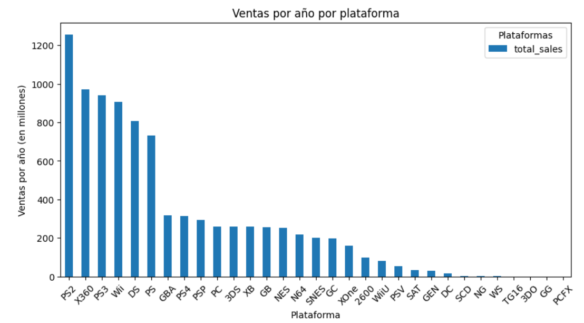
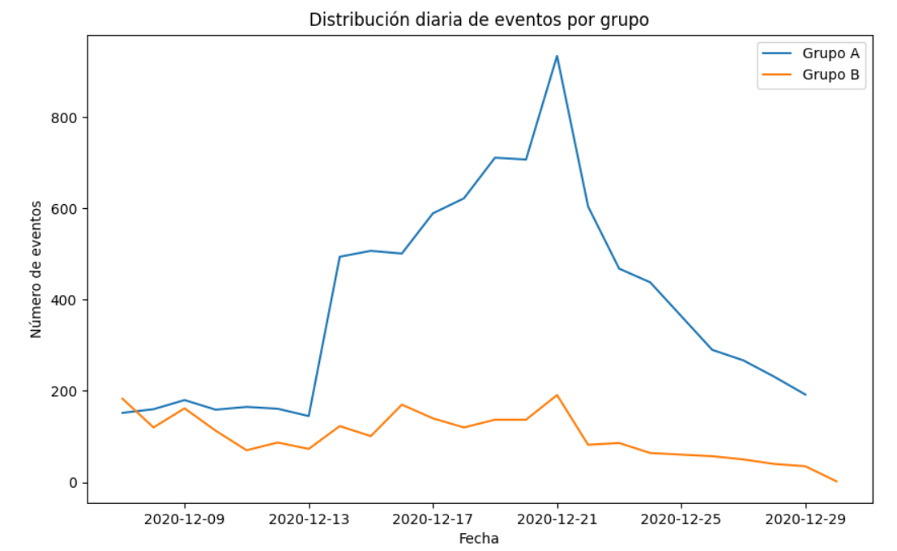
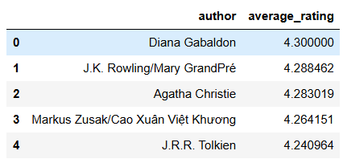
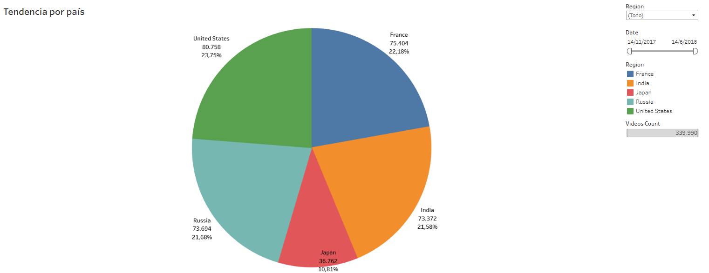

Sandra Romero
Data Analyst | Jr. Project Manager | Social Media Manager
Sobre mí
¡Hola! 👋 Bievenido a mi portafolio de proyectos 🗂️
🚀 Soy Analista de Datos con experiencia en Marketing y Gestión de Proyectos 📊📈
Especializada en la interpretación y visualización de datos para la toma de decisiones estratégica con más de 7 años de experiencia liderando equipos 👥 y desarrollando enfoques analíticos en sectores como la construcción 🏗️, la hospitalidad 🏨 y el calzado 👟.
Tengo la capacidad de transformar datos en insights accionables, optimizar procesos ⚙️ y mejorar la eficiencia operativa además de contar con experiencia en análisis de tendencias de mercado 📉, automatización de reportes 🤖 y generación de dashboards interactivos 📊.
Proyectos
Análisis de datos de ventas de videojuegos 🎮
📌 Descripción
Proyecto enfocado en analizar un conjunto de datos históricos sobre ventas de videojuegos, reseñas de usuarios y críticos, plataformas, géneros y clasificaciones ESRB, con el objetivo de identificar patrones de éxito y apoyar la planificación de campañas publicitarias.
- Realicé limpieza y transformación de datos incluyendo elmanejo de valores ausentes, conversión de tipos y normalización de nombres de columnas.
- Calculé ventas totales por juego y generé visualizaciones para estudiar tendencias por plataforma, año y género.
- Evalué la correlación entre reseñas de usuarios y críticos con las ventas, identificando factores clave para el éxito comercial.
- Elaboré perfiles de usuarios por región y analicé diferencias en preferencias de plataforma, género y clasificación ESRB.
- Apliqué pruebas de hipótesis (T-test) para comparar calificaciones promedio entre plataformas y géneros.
🛠 Requisitos:
Python 3.10+ | Jupyter Notebook | Pandas | Matplotlib | Seaborn
* Este proyecto fue desarrollado como parte de una actividad académica.
Ver en GitHub Análisis de prueba A/B para tienda en línea 🆎
📌 Descripción
Como parte de un ejercicio analítico, retomé el análisis de una prueba A/B iniciada por un equipo anterior en una tienda en línea internacional. El objetivo era evaluar el impacto de un nuevo sistema de recomendaciones en el comportamiento de compra de nuevos usuarios de la región de la UE.
- Diseñé y ejecuté el análisis de una prueba A/B (recommender_system_test) orientada a evaluar la efectividad de un nuevo sistema de recomendaciones en una tienda en línea con usuarios de la UE.
- Procesé y limpié múltiples datasets que incluían eventos de usuario, información de participantes y campañas de marketing, identificando valores nulos, duplicados y usuarios en ambos grupos de prueba.
- Realicé análisis exploratorio de datos (EDA), estudiando conversiones a través del embudo: visualización de productos, añadir al carrito y compra.
- Evalué el impacto del nuevo sistema en métricas clave mediante pruebas estadísticas (prueba Z), verificando si existían mejoras significativas (≥10%) en cada etapa del embudo.
- Concluí con insights sobre la validez de la prueba, distribuciones de eventos y recomendaciones para futuras pruebas A/B.
🛠 Requisitos:
Python 3.10+ | Jupyter Notebook | Pandas | Matplotlib | Estadística | Pruebas A/B
* Este proyecto fue desarrollado como parte de una actividad académica.
Ver en GitHub Análisis de base de datos de una plataforma de libros 📚
📌 Descripción
Este proyecto analiza una base de datos relacional de una plataforma digital de libros para apoyar el desarrollo de un nuevo producto dirigido a lectores durante la pandemia de COVID-19, cuando el interés por la lectura aumentó considerablemente. La base de datos incluye información sobre libros, autores, editoriales, calificaciones y reseñas de usuarios.
- Realicé consultas para identificar tendencias editoriales y de lectura posterior al año 2000.
- Calculé métricas como número de reseñas y promedio de calificaciones por libro.
- Identifiqué editoriales y autores destacados según volumen de publicaciones y calificaciones.
- Segmenté usuarios activos para entender su comportamiento mediante consultas agregadas.
- Presenté conclusiones basadas en datos para apoyar decisiones estratégicas del producto.
🛠 Requisitos:
Python 3.10+ | SQL | Jupyter Notebook | Pandas
* Este proyecto fue desarrollado como parte de una actividad académica.
Ver en GitHub Tendencias de Videos en YouTube - Dashboard Tableau 📊
📌 Descripción
Este proyecto está enfocado en identificar tendencias en videos de YouTube para determinar qué contenido puede ser relevante para estrategias de mercadotecnia. Hasta ahora, el análisis ha sido manual y repetitivo, por lo que se ha tomado la decisión automatizarlo mediante un dashboard interactivo en Tableau.
El objetivo principal del dashboard es proporcionar a los gerentes de planificación de videos publicitarios un análisis claro y actualizado del historial de tendencias en YouTube. Esto les permitirá tomar decisiones basadas en datos sobre qué tipos de contenido pueden ser más efectivos en distintas regiones.
🛠 Requisitos:
Tableau
* Este proyecto fue desarrollado como parte de una actividad académica.
Ver en GitHub 🤝 ¿Colaboramos?
Gracias por visitar mi portafolio.
Actualmente estoy en búsqueda activa de oportunidades como Analista de Datos, donde pueda aportar con mi experiencia en análisis exploratorio, visualización de datos y generación de insights accionables para la toma de decisiones estratégicas.
Me interesa colaborar con empresas de e-commerce, industrias de manufactura o startups Fintech que valoren el uso inteligente de los datos para optimizar procesos, entender el comportamiento del cliente y generar ventajas competitivas.
✨ ¡Hablemos! Estoy lista para aportar valor a tu equipo a través del análisis de datos.
Contacto
Puedes encontrarme en: